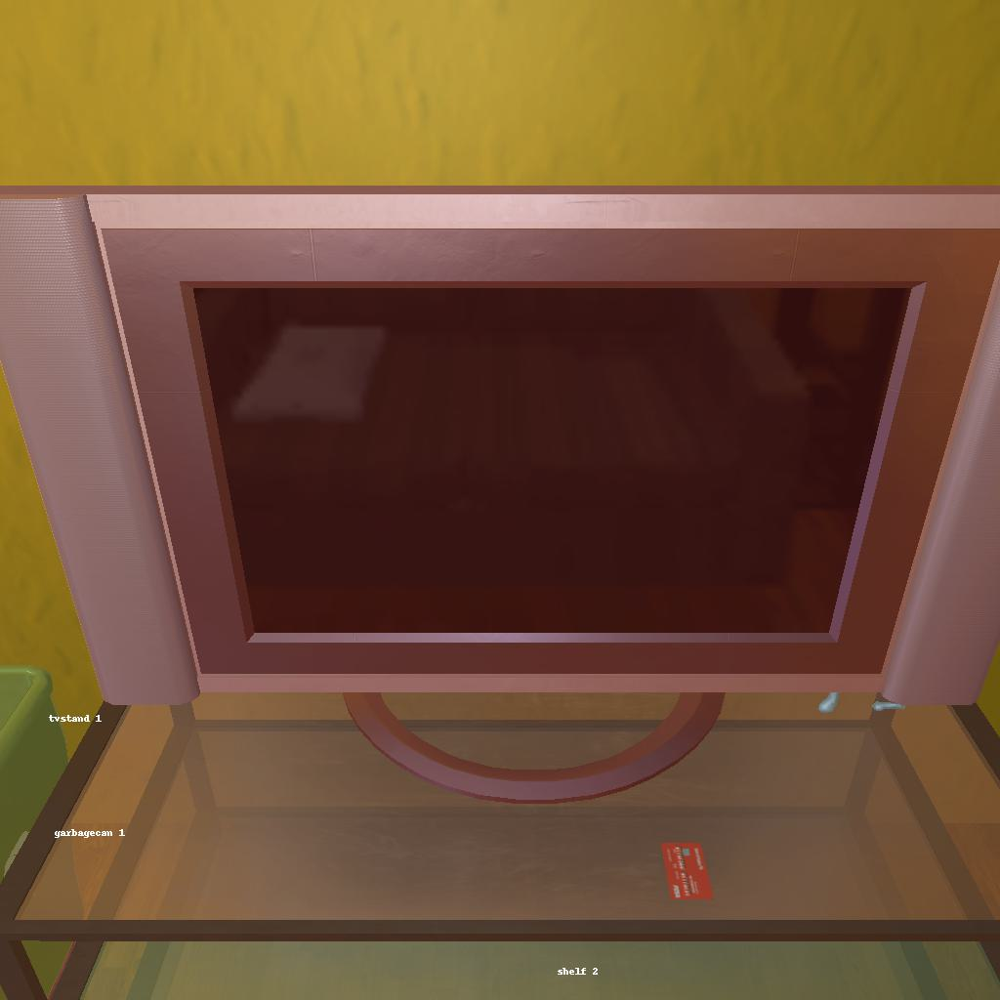

---------------------------------------------------------task: 3---------------------------------------------------------
--------------------------------------------------------------------------------------------------------------------------------------------------------------------
--------------------------------------------------------------------------------------------------------------------------------------------------------------------
Step:--------------------------------------------------------------------------0-------------------------------------------------------------------------------
----------------------------------------
VLM Prompt:
Image1:
**Instruction**
1. Analyze the provided image to identify all visible household objects, focusing on those relevant to the task description "examine the plate with the floorlamp."
2. Use the analysis of the image and the task hint "The agent must find an object of the desired type, locate and turn on a light source with the desired object in-hand." to answer the question: what is the most reasonable action in the choices for the task description "examine the plate with the floorlamp"?
4. Decide and write the answer using the template: The answer is: (i): , where i is the real number. If there is no desired object in the image, search every place based on **Initial Observation** to find the object. And if no one is exactly correct, choose a similar answer.
**Initial Observation**
You are in the middle of a room. Looking quickly around you, you can see armchair (1), garbagecan (1), tvstand (1), shelf (1-5), sofa (1), coffeetable (1), sidetable (1-2), drawer (1)
**Answer Choices**
(1): go to armchair 1
(2): go to garbagecan 1
(3): go to tvstand 1
(4): go to shelf 1
(5): go to shelf 2
(6): go to sofa 1
(7): go to coffeetable 1
(8): go to sidetable 1
(9): go to sidetable 2
(10): go to drawer 1
(11): go to shelf 3
(12): go to shelf 4
(13): go to shelf 5
**Answer**
Let's think step by step by following the instructions.
----------------------------------------
----------------------------------------
Original Response:
First, we need to identify all visible household objects in the image relevant to the task description "examine the plate with the floorlamp." In the image, we can see a tvstand labeled as "tvstand 1", and below it, there is a shelf labeled as "shelf 2".
Now, considering the task hint, the agent must find an object of the desired type, which is a plate, and then locate and turn on a light source, which is the floorlamp, with the desired object in-hand.
Based on the **Initial Observation**, we know there are multiple shelves in the room, and plates are commonly found on shelves or in drawers. Since we need to locate a plate, we should go to the places where a plate is most likely to be found.
The image does not show a floorlamp or a plate, so we must search every place based on the **Initial Observation**.
Looking at the answer choices, the most reasonable action for the task description "examine the plate with the floorlamp" would be to go to a location where a plate might be found. Although the image does not show a plate, shelves and drawers are common places to find one.
Therefore, the answer is:
(4): go to shelf 1 or (10): go to drawer 1
Since we can only select one action, we will go with the first option based on the typical arrangement of items in a household. Thus, the answer is: (4): go to shelf 1.
----------------------------------------
----------------------------------------
>>> Refine Original VLM Response and Get Pure Action: No action
----------------------------------------
-----------------------------------------------------------------
Running time: 14.342539548873901 seconds
Total Money: 1.16804
-----------------------------------------------------------------
-----------------------------------------------------------------
Text Observation:Nothing happens.
-----------------------------------------------------------------
UNSUCCEED